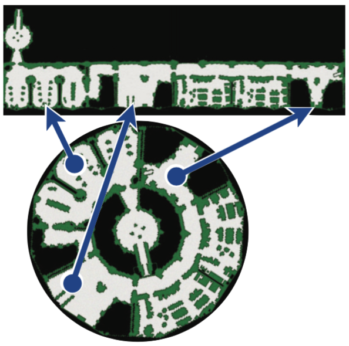
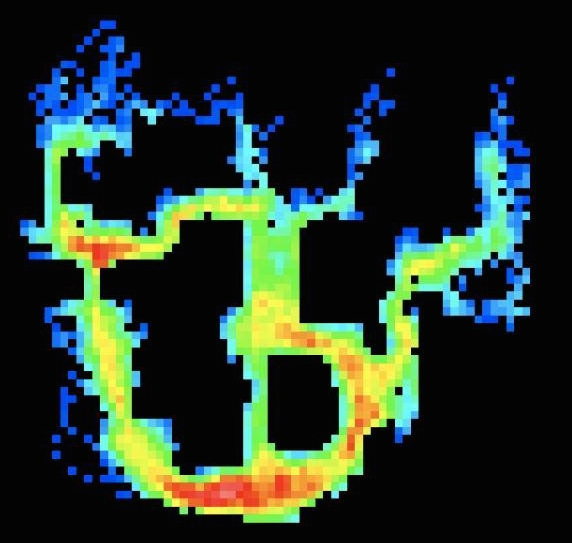

Portfolio
← riscy.io
I'm a computing scientist interested in software quality and all sorts of problems in optimization and search. I completed my PhD in 2014 at the University of Alberta, where I machine-learned pathfinding heuristics. Since then I worked with a great team on advancing the search engine at Dissolve, and today I lead a team in Applied AI/ML at IBM Enterprise Data.
This is a portfolio of recent work. You can also find me on GitHub, LinkedIn, and Google Scholar.
IBM Chief Data Office
I joined the IBM Global Chief Data Office as a senior data scientist in November 2017. IBM is huge and over a century old which brings all kinds of challenges into play, but this also means there are open spaces where machine learning and other new processes can come in and have lasting effects:
- International regulatory compliance
- When I joined IBM, the looming GDPR gave impetus for tools to scan for personal data, and I led a team in developing one. A key idea was to 'flip the script' and approach the design as if our client were a regulatory auditor as opposed to an internal employee. At the tool's core was a deep neural network optimized against the structure of relational databases.
- Static analysis of machine learning codebases
- I built an automated code review service specialized to Python machine learning projects (and their idiosyncrasies). This provided plug & play static analysis to dozens of projects IBM-wide. It became, by a wide margin, the most popular component of our internal MLOps effort.
- Deploying machine learning models
- This is the most tenuous phase of any machine learning project – and it has become my wheelhouse! It includes reproducible builds, monitoring, and software quality (clarity, performance, tests). But one must also understand/document upstream data, maintain pipelines, and uncover silent failures (information leakage, domain shift, bad assumptions).
- Deep learning for data cataloging and search
- To maintain a searchable inventory of IBM's internal data, the CDO has to integrate inputs from many different business units. This is overwhelming without automation. I play a key role in developing and deploying the deep learning models that support this effort, the likes of which I helped commercialize and build into Watson Knowledge Catalog, a flagship IBM product.
Retrieve and Rank
I was Dissolve's data scientist from April 2015 to September 2017. My main focus was enhancing the search engine and the metadata behind it; I also did web dev and kept the data warehouse healthy. My largest contributions centered on automation and process improvement. Key projects include:
- Recovering same-shoot data
- I designed a machine learning workflow with a human in the loop that recovered lost same shoot data for hundreds of thousands of Dissolve's products. This feature received accolades from customers and contributors alike and is now a significant selling point for the site.
- Keyword quality enhancement
- I built a tool to cluster keywords on the order of tens of millions across spelling, typographic, and corrupted unicode variants. This enabled outlier detection, data exploration, and keyword normalization at an even greater scale than Google's OpenRefine.
- Domain-specific search vocabulary
- I played a key role in building Dissolve's industry-leading vocabulary which relates synonyms, hypernyms, and ambiguous terms in a graph. This improved precision and recall, massively augmented Elasticsearch's suggest endpoint, and enforced important consistency checks.
- Spam detection
- Spam is everywhere. Dissolve is no different, as contributors can be tempted to misapply keywords to get their products to appear in more searches. I led the effort to create a dataset, and subsequently built a model wrapped in a microservice to help detect this spam.
Optimization for Heuristic Search
Heuristic search is the backbone of applications like GPS road navigation and video game pathfinding. Here, the "heuristic" is a scalar function that maps pairs of states to an estimate of the true distance between them. A good heuristic helps the algorithm to rank candidate paths, which decreases cycle times and can lead to higher-quality solutions.
I posed the task of building better heuristics as a machine learning problem: minimizing loss between the true distances and the heuristic estimates. I derived several instances where such an optimization is feasible and tractable (or at least approximable). The solutions are state embeddings with intuitive visuals that can be likened to unfolding the search space (pictured, courtesy Nathan Sturtevant).

This work also revealed unobserved links between heuristic search and other computing subfields (numerical optimization, manifold learning, multidimensional scaling), provided a framework for analyzing past approaches, and boosted search performance in several domains.
- Euclidean Heuristic Optimization (slides, poster, bib) Chris Rayner, Michael Bowling, Nathan Sturtevant. Proceedings of the Twenty-Fifth National Conference on Artificial Intelligence (AAAI), 2011.
- Subset Selection of Search Heuristics
(poster, bib)
Chris Rayner, Nathan Sturtevant, Michael Bowling. Proceedings of the International Joint Conference on Artificial Intelligence (IJCAI), 2013. - Optimization for Heuristic Search
(bib)
Chris Rayner. Ph.D. Thesis, University of Alberta, Edmonton, AB, Canada, 2014.
Data Mining Counter-Strike
An "opening" is a fixed sequence of actions you choose to play out the start of a game with. A familiar example of a game where openings are important is chess. If you have a formal way to recognize an opening, it's easy to query a database of games for its success rate, popularity, etc.
But what about a game like Counter-Strike? Its fine-grained state space precludes identifying openings by way of a table lookup. But it is still reasonable to assume that, with enough recorded gameplay data, you can model trends. I started to do so by creating a visualization of the "next-state entropy" of expert players moving through a popular Counter-Strike map. An initial choice is made (hot colors, bottom), invariably followed by fixed actions (cold colors), followed by another choice…

This high regularity meant that cluster analysis was effective in tightly grouping these openings. These clusters formed the basis for the "opening book" I was after. This ultimately gave me categorical data within which I was able to find trends. It also helped me build regressors for predicting player movement and classifiers to distinguish human and machine play.
- Analysing Openings in Tactical Simulations
(bib)
Chris Rayner. M.Sc. Thesis, University of Alberta, Edmonton, AB, Canada, 2008. - This work was featured among the original illustrations in IEEE Spectrum Magazine's December 2008 article, Bots Get Smart (Jonathan Schaeffer, Vadim Bulitko, and Michael Buro).
Emacs Packages
I'm a regular reviewer of new packages on MELPA. I also maintain a couple of
my own that improve Emacs's REPLs (shell-mode but also
inferior-python-mode and anything built on top of comint):
- shx-mode
- A set of "shell extras" that supports a simple markup language for embedding graphics and plots within a session (similar to a Jupyter notebook), adds event-driven and timed behaviors, and makes it easy for users to write their own shell commands in Emacs Lisp, and adds interface improvements such as improved syntax highlighting. Available on MELPA since May 2017.
- bifocal-mode
- A minor mode that splits the current window while you're scrolling the buffer. A large window on top displays past output, while a smaller window on the bottom allows you to continue to interact with the current input and output. Available on MELPA since June 2017.
Other Projects
Here are a few implementations and write-ups on some interesting algorithms:
- Machine Learning with Linear Models
- This is a small demo showcasing a few distinct "regressors" mapping vectors of observations X to vectors of outcomes Y. Varying assumptions about the data can lead to different levels of performance - sometimes drastically.
- Sammon Mapping
- Given a Euclidean distance matrix, there is a closed form to resolve the corresponding points. This computation is a key step in many embedding algorithms. But when you're given a distance matrix that is non-Euclidean, you might have to do something else. The Sammon Map was an early attempt at this. This is a C implementation using BLAS (requires the GNU scientific library) that also supports nonlinear dimensionality reduction.
- Best Practices for A* on Grids
- I learned a bit about writing a good pathfinder in grad school. Here's a list of ways to improve your A* implementation, focusing on pathfinding on four- and eight-connected grids. It's pitched at hobbyists and anyone looking for ways to make their existing code a bit faster, and has accompanying code in C++.
Beyond those listed above, I'm grateful to have been a part of a number of other projects spanning computer poker, optimizing compilers, subjective robotics, and real-time heuristic search:
- On Case Base Formation in Real-Time Heuristic Search
(bib)
Vadim Bulitko, Chris Rayner, Ramon Lawrence. Proceedings of the Artificial Intelligence and Interactive Digital Entertainment Conference (AIIDE), 2012. - Evolving Feature Selectors to Inform Compiler Optimizations
(bib)
Chris Rayner. A final project report describing an emulation of Leather et al.'s 2009 work. For the course Machine Learning and Optimizing Compilers. University of Alberta, 2009. - The Critterbot: a Subjective Robotic Project
(bib)
Marc Bellemare, Michael Bowling, Thomas Degris, Anna Koop, Chris Rayner, Michael Sokolsky, Richard Sutton, Adam White, Eric Wiewiora. Multidisciplinary Symposium on Reinforcement Learning (MSRL), 2009. - Real-Time Heuristic Search with a Priority Queue
(bib)
Chris Rayner, Katherine Davison, Vadim Bulitko, Kenneth Anderson, Jieshan Lu. Proceedings of the Twentieth International Joint Conference on Artificial Intelligence (IJCAI), 2007. - Bayes' Bluff: Opponent Modelling in Poker
(bib)
Finnegan Southey, Michael Bowling, Bryce Larson, Carmelo Piccione, Neil Burch, Darse Billings, Chris Rayner. Proceedings of the Twenty-First Conference on Uncertainty in Artificial Intelligence (UAI), 2005.
BibTeX Entries
@PhdThesis{Rayner-14, title = {Optimization for Heuristic Search}, author = {Chris Rayner}, school = {University of Alberta}, year = 2014, month = 12, }
@inproceedings{RaynerEtAl-13, title = {Subset Selection of Search Heuristics}, author = {Chris Rayner and Nathan Sturtevant and Michael Bowling}, booktitle = {Proceedings of the International Joint Conference on Artificial Intelligence (IJCAI)}, acceptrate = {28.0\%}, acceptnumbers= {413 of 1473}, year = 2013, month = 8, pages = {637--643}, address = {Beijing, China}, }
@inproceedings{BulitkoEtAl-12, title = {On Case Base Formation in Real-Time Heuristic Search}, author = {Vadim Bulitko and Chris Rayner and Ramon Lawrence}, booktitle = {Proceedings of the Artificial Intelligence and Interactive Digital Entertainment Conference (AIIDE)}, acceptrate = {54.2\%}, year = 2012, }
@inproceedings{RaynerEtAl-11, title = {Euclidean Heuristic Optimization}, author = {Chris Rayner and Michael Bowling and Nathan Sturtevant}, booktitle = {Proceedings of the Twenty-Fifth National Conference on Artificial Intelligence (AAAI)}, acceptrateOral = {24.8\%}, acceptrateOralAndPoster = {4.4\%}, acceptnumbers = {242 of 975}, year = 2011, pages = {81--86}, address = {San Francisco, California}, }
@report{Rayner-09, title = {Evolving Feature Selectors to Inform Compiler Optimizations}, author = {Chris Rayner}, institution = {University of Alberta}, month = dec, year = 2009, }
@inproceedings{BellemareEtAl-09, title = {The Critterbot: a Subjective Robotic Project}, author = {Marc Bellemare and Michael Bowling and Thomas Degris and Anna Koop and Chris Rayner and Michael Sokolsky and Richard Sutton and Adam White and Eric Wiewiora}, booktitle = {Multidisciplinary Symposium on Reinforcement Learning (MSRL)}, year = 2009, }
@MastersThesis{Rayner-08, title = {Analysing Openings in Tactical Simulations}, author = {Chris Rayner}, school = {University of Alberta}, year = 2008 month = 6 day = 11 }
@inproceedings{RaynerEtAl-07, title = {Real-Time Heuristic Search with a Priority Queue}, author = {Chris Rayner and Katherine Davison and Vadim Bulitko and Kenneth Anderson and Jieshan Lu}, acceptrate = {35\%}, booktitle = {Proceedings of the Twentieth International Joint Conference on Artificial Intelligence (IJCAI)}, year = 2007, pages = {2372--2377} }
@inproceedings{SoutheyEtAl-05, title = {Bayes' Bluff: Opponent Modelling in Poker}, author = {Finnegan Southey and Michael Bowling and Bryce Larson and Carmelo Piccione and Neil Burch and Darse Billings and Chris Rayner}, booktitle = {Proceedings of the Twenty-First Conference on Uncertainty in Artificial Intelligence (UAI)}, pages = {550--558}, year = 2005, }